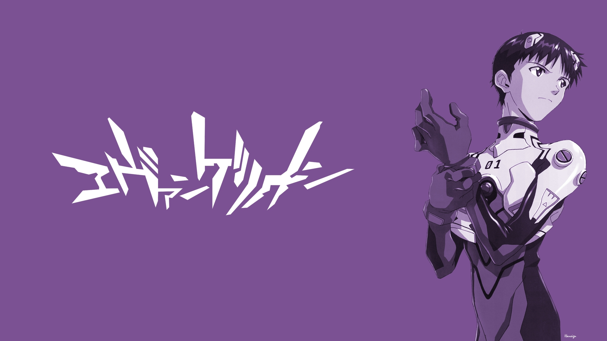
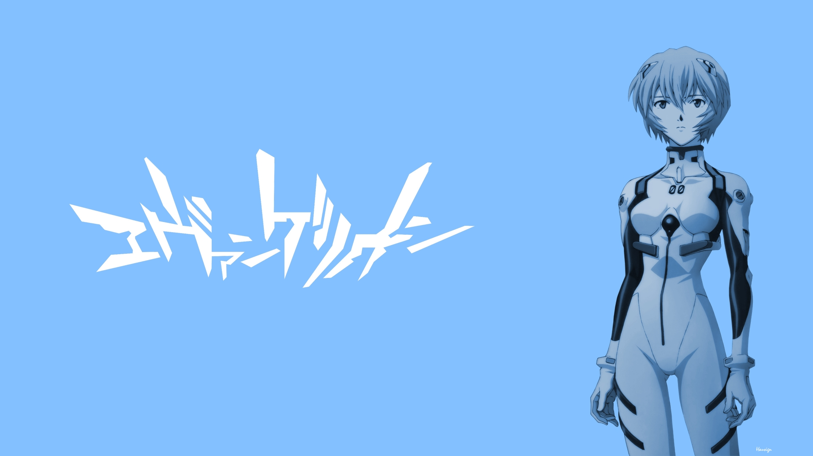
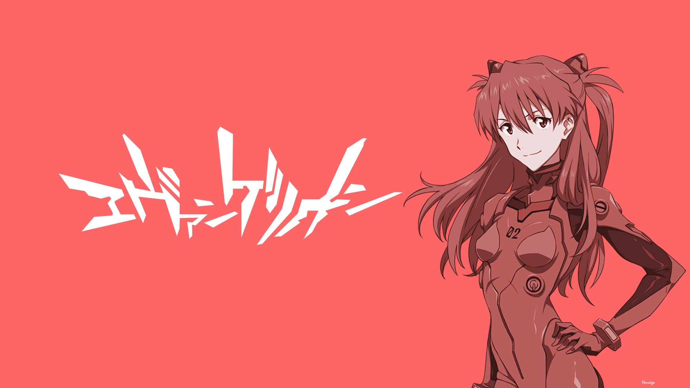

|  |
碇真嗣，年龄14岁，是EVA初号机的驾驶员，第三适格者(THIRD CHILDREN) 。幼年时亲眼目睹了母亲碇唯在试验事故中被"消灭"，其父碇源堂在失去妻子之后将其寄养在亲戚家中，不幸的童年经历致使了其内向而不自信、渴望得到他人(尤其是父亲)的认可的性格。突袭世界的大灾难"第二次冲击"后，世界在废墟之上重建。在14岁时被10年以来久无音讯的父亲碇源堂叫到第三新东京市，本以为能见到父亲迎接的他，却见到名为"使徒"的巨大生物与军队交火。在此之后踏上了与使徒战斗的征途。 |
|  |
绫波丽是《新世纪福音战士》的女主角之一，EVA第一适格者，零号机驾驶员，以往经历、资料被完全抹消。她是以碇唯为原型培养的人造人、拥有莉莉丝的灵魂的人类。 作为在EVA剧中最具神秘色彩的角色，绫波丽过去的资料是一片空白，在使徒来袭的七个月之前即已开始接受驾驶训练，不过却在零号机的启动实验中因意外而身受重伤。所以当丽在剧中第一次登场，便是以全身包裹着绷带的形象出现的（注，漫画版改为在之前与第三使徒的战斗中负伤），这一印象更一举帮助她拿下了“绷带少女”的美誉。 |
|  |
身为二号机专属驾驶员的惣流·明日香·兰格雷，是名具备随意指使旁人的强悍性格，以及拥有偶像般容貌的少女。她是个芳龄14岁就已经大学毕业的天才儿童，自尊心很高，刚开始一直瞧不起同样是EVA的驾驶员、但运动神经和头脑不如自己的真嗣。不过在跟使徒伊斯拉斐的战斗中，与真嗣成功做出合击之后，她也逐渐对他敞开心房。 |